library(here)
source(here("setup.R"))
library(zoo)
library(ggmagnify)
library(latex2exp)
library(scales)here() starts at /Users/stefan/workspace/work/phd/thesis
library(here)
source(here("setup.R"))
library(zoo)
library(ggmagnify)
library(latex2exp)
library(scales)here() starts at /Users/stefan/workspace/work/phd/thesis
tikz/cases_germany.texrki_county <- here("data/processed/RKI_county.csv") %>%
read_csv()
df_weekly <- rki_county %>%
group_by(date) %>%
summarize(cases = sum(cases), deaths = sum(deaths)) %>%
mutate(cases_7 = rollmean(cases, k = 7, fill = NA), deaths_7 = rollmean(deaths, k = 7, fill = NA))
p_cases <- df_weekly %>%
select(-deaths_7) %>%
pivot_longer(cols = c(cases, cases_7), names_to = "type", values_to = "value") %>%
mutate(type = ifelse(type == "cases", "daily", "7-day avg.")) %>%
ggplot(aes(date, value, color = type, alpha = type)) +
geom_line() +
scale_y_continuous(labels = scales::comma) +
scale_color_manual(values = c("daily" = "black", "7-day avg." = pal_npg()(1))) +
scale_alpha_manual(values = c("daily" = .4, "7-day avg." = 1)) +
labs(x = "", y = "\\# reported cases", alpha = "", color = "", title = "A") +
geom_magnify( # christmas
from = list(ymd("2020-12-01"), ymd("2021-02-01"), .1 * 1e5, .35 * 1e5),
to = list(ymd("2021-03-01"), ymd("2022-01-01"), 1e5, 2.8e5),
axes = "x"
) +
geom_magnify( # Toennies
from = list(ymd("2020-05-01"), ymd("2020-08-01"), 0, .1e4),
to = list(ymd("2020-01-01"), ymd("2020-11-01"), 1e5, 2.8e5),
axes = "x"
)
p_deaths <- df_weekly %>%
select(-cases_7) %>%
pivot_longer(cols = c(deaths, deaths_7), names_to = "type", values_to = "value") %>%
mutate(type = ifelse(type == "deaths", "daily", "7-day avg.")) %>%
ggplot(aes(date, value, color = type, alpha = type)) +
geom_line() +
scale_color_manual(values = c("daily" = "black", "7-day avg." = pal_npg()(1))) +
scale_alpha_manual(values = c("daily" = .4, "7-day avg." = 1)) +
labs(x = "reporting date (Meldedatum)", y = "\\# reported deaths", alpha = "", color = "", title = "B")
# geom_magnify( # christmas
# from = list(ymd("2020-11-15"), ymd("2021-02-01"), 600, 1000),
# to = list(ymd("2021-03-10"), ymd("2021-10-10"), 400, 1100),
# axes = "x"
# )
(p_cases / p_deaths) + plot_layout(guides = "collect") & theme(legend.position = "bottom", legend.box = "horizontal")
ggsave_tikz(here("tikz/cases_germany.tex"))Warning message:
“Removed 6 rows containing missing values or values outside the scale range
(`geom_line()`).”
Warning message:
“Removed 6 rows containing missing values or values outside the scale range
(`geom_line()`).”
Warning message:
“Removed 6 rows containing missing values or values outside the scale range
(`geom_line()`).”
Warning message:
“Removed 6 rows containing missing values or values outside the scale range
(`geom_line()`).”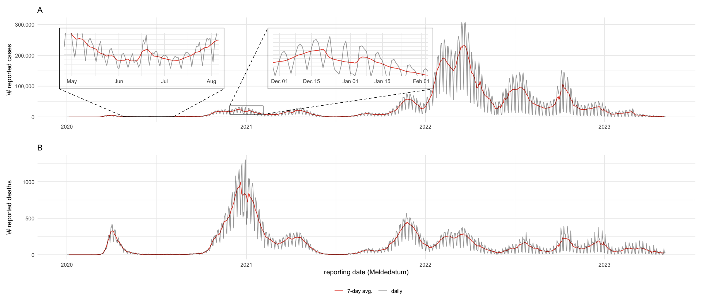
rki_raw <- read_csv(here("data/raw/RKI.csv"))
rki_raw %>%
group_by(IstErkrankungsbeginn) %>%
summarize(cases = sum(AnzahlFall * (NeuerFall >= 0))) %>%
mutate(prop = cases / sum(cases) * 100)
rki_raw %>%
filter(IstErkrankungsbeginn == 1) %>%
group_by(Refdatum) %>%
summarize(cases = sum(AnzahlFall * (NeuerFall >= 0))) %>%
ggplot(aes(Refdatum, cases)) +
geom_line() +
labs(title = "Only dates of symptom onset")| IstErkrankungsbeginn | cases | prop |
|---|---|---|
| <dbl> | <dbl> | <dbl> |
| 0 | 29422629 | 75.80404 |
| 1 | 9391434 | 24.19596 |
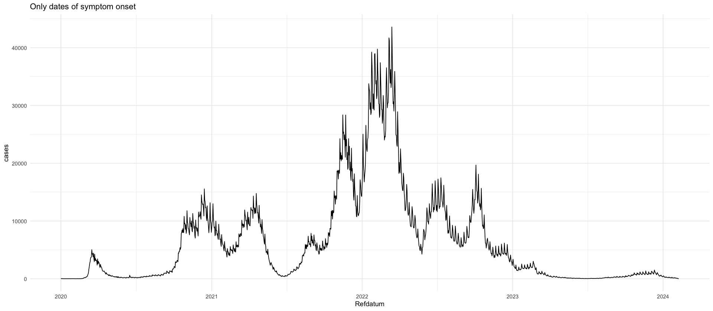
We use the reporting triangle for the number of cases, i.e. on any day \(t\) the number of cases \[I_{s,t}\] that are reported associated with date \(s < t\).
We begin our analysis on April 1st 2020, when data have become stable enough to warrant an analysis.
full_rep_tri %>%
mutate(I = ifelse(I < 1, NA, I)) %>%
ggplot(aes(x = s, y = t, fill = I)) +
geom_tile() +
scale_fill_viridis_c(trans = "log10") +
labs(x = "s", y = "t", fill = TeX("$I_{s,t}$"))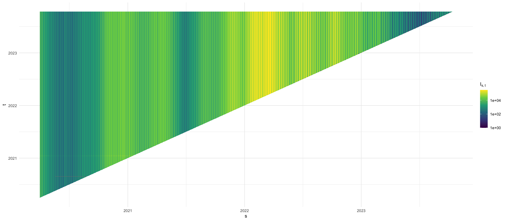
How often is \(I_{s,t} > I_{s,T}\)?
rel_diffs <- full_rep_tri %>%
group_by(s) %>%
arrange(t) %>%
mutate(rel_diff = (I - tail(I, 1)) / tail(I, 1)) %>%
ungroup() %>%
filter(rel_diff > 0) %>%
mutate(rel_diff_pct = rel_diff * 100)
rel_diffs %>%
ggplot(aes(x = rel_diff)) +
geom_histogram(bins = 100) +
scale_x_log10()
rel_diffs %>%
summarize(
q90 = quantile(rel_diff_pct, .9),
q95 = quantile(rel_diff_pct, .95),
q99 = quantile(rel_diff_pct, .99),
q999 = quantile(rel_diff_pct, .999)
)
rel_diffs %>%
arrange(rel_diff_pct) %>%
tail(20)| q90 | q95 | q99 | q999 |
|---|---|---|---|
| <dbl> | <dbl> | <dbl> | <dbl> |
| 0.4065041 | 0.6497726 | 1.840491 | 16.1435 |
| t | s | I | rel_diff | rel_diff_pct |
|---|---|---|---|---|
| <date> | <date> | <dbl> | <dbl> | <dbl> |
| 2021-01-17 | 2020-12-24 | 58712 | 1.779924 | 177.9924 |
| 2021-01-17 | 2021-01-03 | 24542 | 1.781594 | 178.1594 |
| 2021-01-17 | 2020-11-30 | 36988 | 1.781889 | 178.1889 |
| 2021-01-17 | 2020-12-31 | 54618 | 1.792331 | 179.2331 |
| 2021-01-17 | 2020-12-21 | 56628 | 1.792996 | 179.2996 |
| 2021-01-17 | 2021-01-02 | 27996 | 1.799040 | 179.9040 |
| 2021-01-17 | 2021-01-10 | 23721 | 1.800921 | 180.0921 |
| 2021-01-17 | 2021-01-04 | 40161 | 1.805323 | 180.5323 |
| 2021-01-17 | 2021-01-05 | 77088 | 1.808306 | 180.8306 |
| 2021-01-17 | 2020-12-22 | 81282 | 1.808736 | 180.8736 |
| 2021-01-17 | 2020-12-29 | 77477 | 1.812436 | 181.2436 |
| 2021-01-17 | 2021-01-07 | 73534 | 1.816963 | 181.6963 |
| 2021-01-17 | 2021-01-12 | 63763 | 1.822996 | 182.2996 |
| 2021-01-17 | 2021-01-08 | 69526 | 1.833055 | 183.3055 |
| 2021-01-17 | 2020-12-14 | 54632 | 1.874158 | 187.4158 |
| 2021-01-17 | 2020-12-28 | 45134 | 1.875510 | 187.5510 |
| 2021-01-17 | 2021-01-01 | 29620 | 1.891731 | 189.1731 |
| 2021-01-17 | 2020-12-25 | 38099 | 1.898364 | 189.8364 |
| 2021-01-17 | 2020-12-26 | 33642 | 1.912223 | 191.2223 |
| 2021-01-17 | 2021-01-11 | 40595 | 2.008374 | 200.8374 |
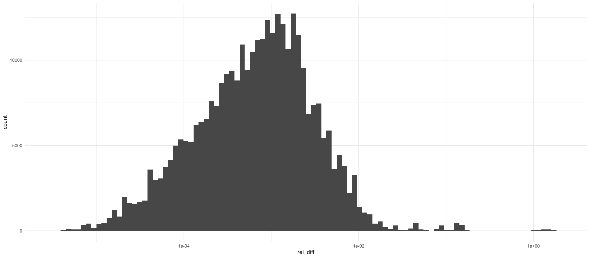
tikz/reporting_delays_cases.texdata_april <- full_rep_tri %>%
filter(s >= ymd("2021-12-01"), s < ymd("2022-01-01")) %>%
filter(t >= ymd("2021-12-01"), t < ymd("2022-01-01"))
p_reptri_case <- data_april %>%
ggplot(aes(x = s, y = t, fill = I)) +
geom_tile() +
scale_fill_viridis_c(trans = "log10", labels = label_comma()) +
labs(x = "$s$", y = "$t$", fill = "$I_{s,t}$")
p_maginal_case <- data_april %>%
ggplot(aes(x = s, y = I, color = t, group = factor(t))) +
geom_line() +
theme(axis.title.x = element_blank(), axis.ticks.x = element_blank(), axis.text.x = element_blank()) +
labs(x = "", y = "$I_{s,t}$", color = "data date") +
scale_color_viridis_c(option = "H", trans = "date")
(p_maginal_case / p_reptri_case) + plot_layout(heights = c(1, 2))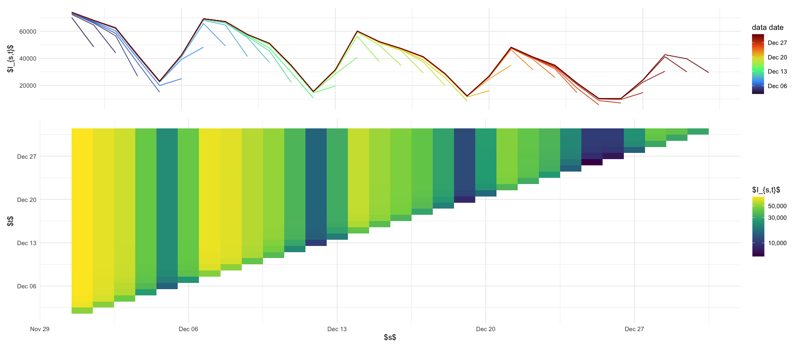
data/processed/RKI_4day_rt.csvWe are only interested in the number of newly reported cases on each day. Let \[ I_{s,t} = \sum_{\tau = 0}^{t - s} i_{s, \tau} \] be the distribution of reported on date \(t\) for date \(s\). We will assume that \(i_{s,\tau} \geq 0\) always holds. To ensure this, let \(T\) be the last date observed and set \[ \tilde I_{s,t} = \min \{\max \{I_{s,s}, \dots, I_{s,t}\}, I_{s,T}\}. \] \(\tilde I_{s,t}\) is a running maximum that is cut-off at the final value \(I_{s,T}\) (to deal with big rearrangements of cases, due to missingness or faulty data).
rep_tri_cummax <- full_rep_tri %>%
arrange(t) %>%
group_by(s) %>%
mutate(
I_tilde = pmin(cummax(I), tail(I, 1)),
) %>%
ungroup()
increments <- rep_tri_cummax %>%
group_by(s) %>%
mutate(
i = I_tilde - lag(I_tilde, default = 0),
) %>%
ungroup()
stopifnot(all(increments$i >= 0))
increments %>%
ggplot(aes(x = s, y = t - s, fill = i)) +
geom_tile() +
scale_fill_viridis_c(trans = "log10", na.value = rgb(0, 0, 0, 0)) +
ylim(0, 30)
max_tau <- 4
increments %>%
mutate(tau = as.numeric(t - s)) %>%
filter(tau <= max_tau) %>%
filter(s >= min(s) + max_tau) %>%
select(s, tau, i) %>%
pivot_wider(names_from = tau, values_from = i, values_fill = 0) %>%
rename(county_date = s) %>%
write_csv(here("data/processed/RKI_4day_rt.csv"))Warning message in scale_fill_viridis_c(trans = "log10", na.value = rgb(0, 0, 0, :
“log-10 transformation introduced infinite values.”
Warning message:
“Removed 795691 rows containing missing values or values outside the scale range
(`geom_tile()`).”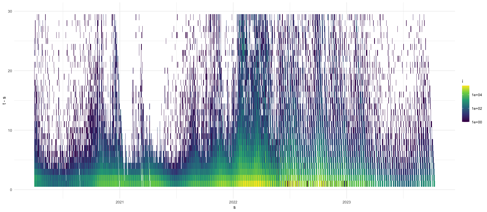
We see that most delays are short. Let us investigate the proportion of reported cases with delay \(\tau = t - s\):
\[ p_{\tau} = \frac{\sum_{t - s = \tau} i_{s, t}}{\sum_{t,s} i_{s,t}} \]
and we will look at the survival function \[ \hat S(\tau) = 1- \sum_{\tau' \leq \tau} p_{\tau'} \] which measures the fraction of cases reported after \(\tau\) days of delay.
tikz/survival_function_rep_tri_incidences.textotal_S <- increments %>%
mutate(tau = as.numeric(t - s)) %>%
group_by(tau) %>%
summarize(total = sum(i)) %>%
ungroup() %>%
mutate(p = total / sum(total)) %>%
mutate(S = 1 - cumsum(p))
quarter_S <- increments %>%
mutate(tau = as.numeric(t - s)) %>%
group_by(quarter = floor_date(s, "quarter"), tau) %>%
summarize(total = sum(i)) %>%
mutate(p = total / sum(total)) %>%
mutate(S = 1 - cumsum(p)) %>%
ungroup()
p_boxplots <- increments %>%
mutate(tau = as.numeric(t - s)) %>%
group_by(s) %>%
arrange(t) %>%
mutate(p = i / sum(i)) %>%
mutate(S = 1 - cumsum(p)) %>%
ungroup() %>%
filter(tau <= 10) %>%
filter(S > 1e-7) %>%
ggplot(aes(x = factor(tau), y = S, group = tau)) +
geom_boxplot() +
scale_y_log10(breaks = c(1, .01, .0001), labels = c("1", "0.01", "0.0001")) +
geom_hline(aes(yintercept = y, linetype = name), data = tibble(y = c(.05, .01), name = factor(2:3, labels = c("5\\%", "1\\%")))) +
scale_linetype_manual(values = c("dashed", "dotted")) +
labs(x = "$\\tau$", y = "$\\hat S_{s}(\\tau)$", title = "A", linetype = "")
p_hat_S <- quarter_S %>%
filter(tau <= 10) %>%
# mutate(label = ifelse(tau %in% c(4,8), paste(round(S * 100, 1), "\\%") , NA)) %>%
mutate(ord_fct = ordered(quarter)) %>%
# relevel ord_fct to use levels(fct) <- paste0(year(fct), "-Q", quarter(fct))
mutate(ord_fct = fct_relevel(ord_fct, paste0(year(ord_fct), "-Q", quarter(ord_fct)))) %>%
mutate(group = as.numeric(ord_fct)) %>%
mutate(x = tau + (group - 8) / 25) %>%
ggplot(aes(x = x, y = S, color = group)) +
geom_point(size = .5) +
geom_segment(aes(x = x, xend = x, y = S, yend = 0), linewidth = .3) +
geom_hline(aes(yintercept = y, linetype = name), data = tibble(y = c(.05, .01), name = factor(2:3, labels = c("5\\%", "1\\%")))) +
scale_linetype_manual(values = c("dashed", "dotted")) +
scale_x_continuous(breaks = 0:10) +
scale_y_log10(breaks = c(.1, .01, .001), labels = c("0.1", "0.01", "0.001")) +
labs(x = "$\\tau$", y = "$\\hat S_q(\\tau)$", color = "", linetype = "", title = "B") +
scale_color_viridis_c(breaks = c(2, 8, 14), labels = c("2020-Q3", "2022-Q1", "2023-Q2")) +
guides(color = guide_colorbar())
p_boxplots / p_hat_S + plot_layout(heights = c(1, 1), guides = "collect")
ggsave_tikz(here("tikz/survival_function_rep_tri_incidences.tex"))Warning message:
“There were 3 warnings in `mutate()`.
The first warning was:
ℹ In argument: `ord_fct = fct_relevel(ord_fct, paste0(year(ord_fct), "-Q",
quarter(ord_fct)))`.
Caused by warning:
! tz(): Don't know how to compute timezone for object of class ordered/factor; returning "UTC".
ℹ Run `dplyr::last_dplyr_warnings()` to see the 2 remaining warnings.”
Warning message in scale_y_log10(breaks = c(0.1, 0.01, 0.001), labels = c("0.1", :
“log-10 transformation introduced infinite values.”
Warning message in scale_y_log10(breaks = c(0.1, 0.01, 0.001), labels = c("0.1", :
“log-10 transformation introduced infinite values.”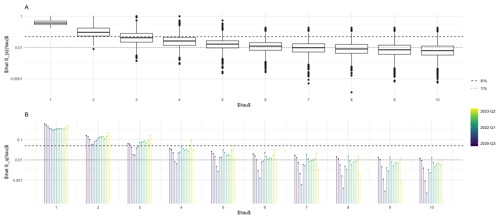
Denote by \[ H^{a}_{s,t} \] the number of hospitalisations in age-group \(a\) whose case reporting date is \(s\) and whose hospitalization reporting date is \(t\).
df_hosp_plot <- hospitalisations_raw %>%
filter(s >= ymd("2021-12-01"), s < ymd("2022-01-01")) %>%
filter(t >= ymd("2021-12-01"), t < ymd("2022-01-01")) %>%
group_by(s, t) %>%
summarize(H = sum(H))
p_reptri_hosp <- df_hosp_plot %>%
ggplot(aes(s, t, fill = H)) +
geom_tile() +
scale_fill_viridis_c(trans = "log10") +
labs(fill = "$H_{s,t}$", x = "$s$", y = "$t$")
p_marginal_hosp <- df_hosp_plot %>%
ggplot(aes(s, H, color = t, group = t)) +
geom_line() +
theme(axis.title.x = element_blank(), axis.ticks.x = element_blank(), axis.text.x = element_blank()) +
labs(x = "", y = "$H_{s,t}$", color = "data date") +
scale_color_viridis_c(option = "H", trans = "date")
p_marginal_hosp / p_reptri_hosp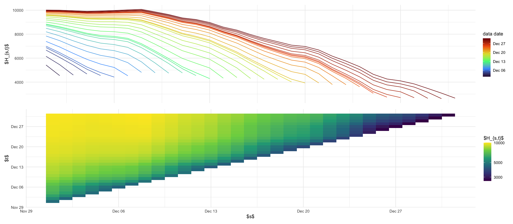
(((p_maginal_case + ggtitle("A")) / p_reptri_case) | ((p_marginal_hosp + ggtitle("B")) / p_reptri_hosp)) + plot_layout(heights = c(1, 2), guides = "collect")
ggsave_tikz(here("tikz/reporting_delays_cases.tex"))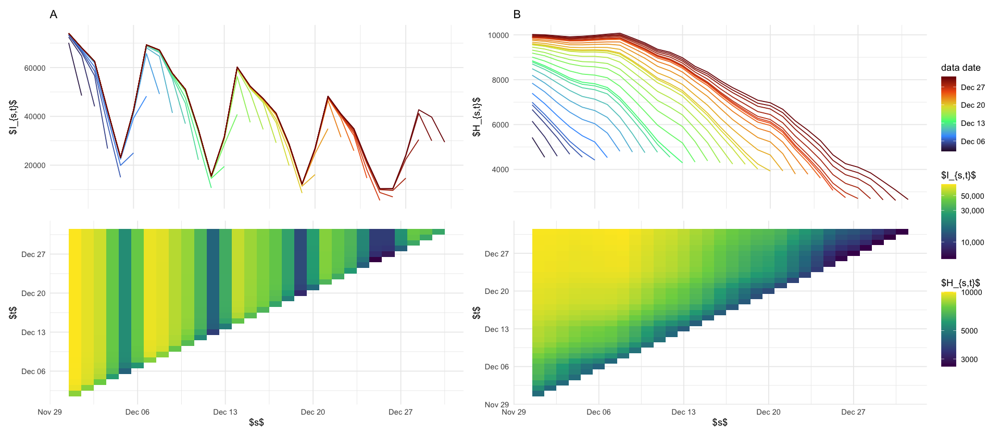
p_s_plus_tau_constant <- rep_tri_hosp_cummax %>%
filter(tau <= 31) %>%
filter(s >= ymd("2021-12-01")) %>%
filter(s < ymd("2022-01-01")) %>%
group_by(s, tau) %>%
summarize(h = sum(h)) %>%
ggplot(aes(s, tau, fill = h)) +
geom_tile() +
# facet_wrap(~a) +
scale_fill_viridis_c(trans = "log10", na.value = "grey80") +
coord_fixed() +
labs(title = "B", x = "reporting date $s$", y = "hosp. delay $\\tau$ [days]", fill = "$h_{s, \\tau}$") +
theme(axis.text.x = element_text(angle = 90, hjust = 1, size = 10))
p_delayed_reporting_double <- rep_tri_hosp_cummax %>%
filter(tau > 0, tau < 5) %>%
filter(s >= ymd("2021-11-30")) %>%
filter(s < ymd("2022-01-01")) %>%
group_by(s, tau) %>%
summarize(h = sum(h)) %>%
mutate(tau = factor(tau)) %>%
ggplot(aes(s, y = h, color = tau, group = tau)) +
geom_line() +
labs(color = "$\\tau$", x = "", y = "increment $h_{s, \\tau}$", title = "A") +
# theme(axis.title.x = element_blank(), axis.ticks.x = element_blank(), axis.text.x = element_blank())
theme(axis.text.x = element_text(angle = 90, hjust = 1, size = 10))
p_survival <- rep_tri_hosp_cummax %>%
filter(s == ymd("2021-12-01")) %>%
group_by(a) %>%
mutate(cum_p = cumsum(h) / sum(h)) %>%
ungroup() %>%
ggplot(aes(tau, 1 - cum_p, color = a)) +
geom_vline(xintercept = 28 * seq(4), linetype = 2, color = "gray") +
geom_step() +
coord_cartesian(xlim = c(NA, 120), ylim = c(0, .2)) +
labs(x = "hospitalization delay $\\tau$ [days]", y = "empirical survival function $\\hat S^a(\\tau)$", title = "C") +
scale_color_discrete(name = "") + # ) +labels = as_labeller(age_group_labels)) +
annotate("text", x = 28 * seq(4) + 8, y = .205, label = paste0(seq(4), " weeks"), size = 2, color = "gray")
((p_delayed_reporting_double / p_s_plus_tau_constant)) | p_survival
ggsave_tikz(here("tikz/double_weekday_effect_hosp.tex"))Don't know how to automatically pick scale for object of type <difftime>.
Defaulting to continuous.
Warning message in scale_fill_viridis_c(trans = "log10", na.value = "grey80"):
“log-10 transformation introduced infinite values.”
Don't know how to automatically pick scale for object of type <difftime>.
Defaulting to continuous.
Don't know how to automatically pick scale for object of type <difftime>.
Defaulting to continuous.
Warning message in scale_fill_viridis_c(trans = "log10", na.value = "grey80"):
“log-10 transformation introduced infinite values.”
Don't know how to automatically pick scale for object of type <difftime>.
Defaulting to continuous.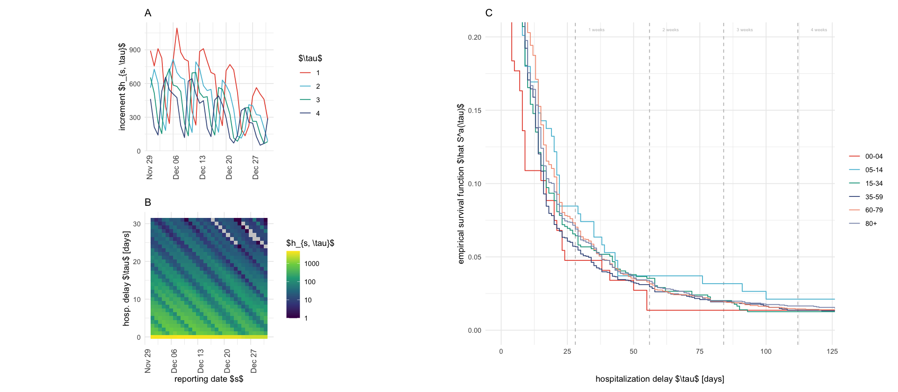
library(ISOweek)
tests <- read_csv("https://github.com/robert-koch-institut/SARS-CoV-2-PCR-Testungen_in_Deutschland/raw/main/SARS-CoV-2-PCR-Testungen_in_Deutschland.csv")
tests %>%
mutate(date = paste0(date, "-1")) %>%
mutate(date = str_replace(date, "W([0-9])-", "W0\\1-")) %>%
mutate(date = ISOweek2date(date)) %>%
ggplot(aes(date, tests_positive_ratio * 100)) +
geom_line()
tests %>%
mutate(date = paste0(date, "-1")) %>%
mutate(date = str_replace(date, "W([0-9])-", "W0\\1-")) %>%
mutate(date = ISOweek2date(date)) %>%
ggplot(aes(date, tests_total)) +
geom_line()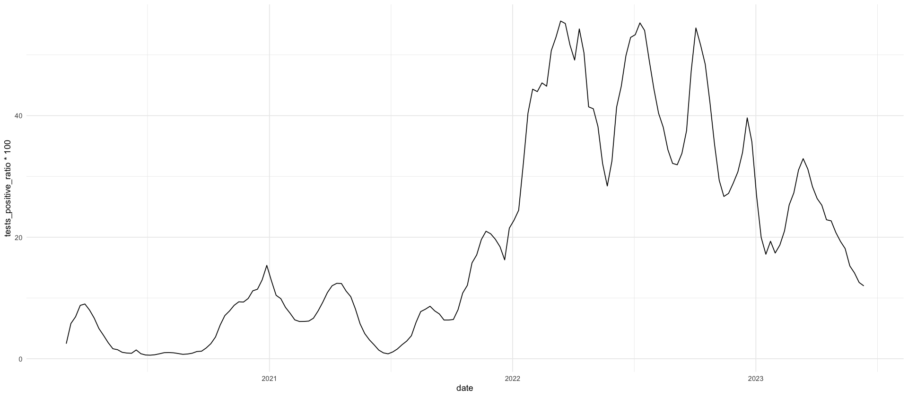
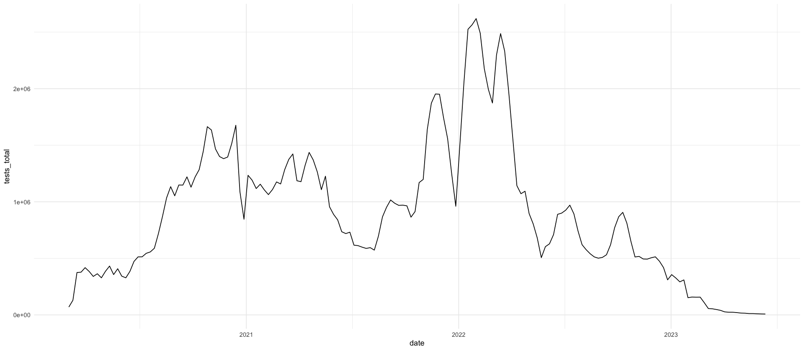
w <- c((0:3) / 3, 1, (5:1) / 5)
w <- w / sum(w)
mean_w <- sum(seq_along(w) * w)
tibble(tau = seq_along(w), w = w) %>%
ggplot(aes(tau, w)) +
geom_point(size = 4) +
geom_segment(aes(xend = tau, yend = 0)) +
geom_vline(data = tibble(mean = mean_w), mapping = aes(xintercept = mean, linetype = "$\\bar w$")) +
scale_x_continuous(breaks = 0:length(w)) +
scale_linetype_manual(values = "dashed") +
labs(x = "$\\tau$", y = "$w_\\tau$", linetype = "")
ggsave_tikz(here("tikz/generation_time.tex"), height = 3)
write_csv(tibble(tau = seq_along(w), w = w), here("data/processed/generation_time.csv"))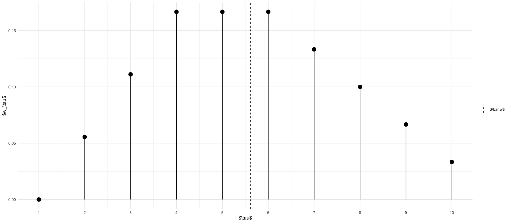